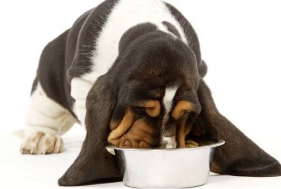
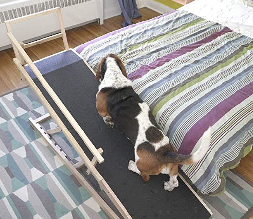

Cuidados del Basset Hound
En esta sección te contamos todos los cuidados que los humanos deben tener en cuenta.
Siempre visitar al veterinario por lo menos entre 2 a 3 veces en el año y tener actualizado el plan de vacunación.
Alimentación y peso
Es muy importante prestar atención a las porciones de comida que le damos a esta mascota, pues tiene una fuerte tendencia a la obesidad debido a su espíritu goloso, lo que puede traerle graves problemas de salud en un futuro complicando incluso su movilidad.
Cuidado de nuestras orejas
Otra característica evidente de la raza son sus largas orejas, que requieren de un cuidado muy especial para mantenerse saludables y libres de olores. Se recomienda limpiar las orejas del basset hound una o dos veces a la semana.
Se recomeinda utilizar alcohol boricado o prducto especial de uso veterinario, ¡¡te dejamos este videito para que lo mires!!

Cuidados de nuestra columna y patas
Debido a que somos perros largos con patas muy cortas, nuestros humanos deben cuidar nuestras subidas y bajadas de la cama o del sillon, para esto existen rampas que nos permiten seguir disfrutando de dormir con nuestros humanos o disfrutar de mimos en el sillon de una manera mas segura.
